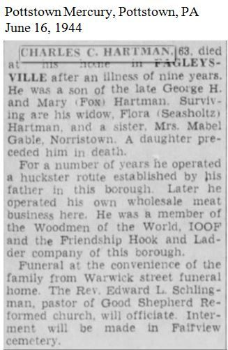
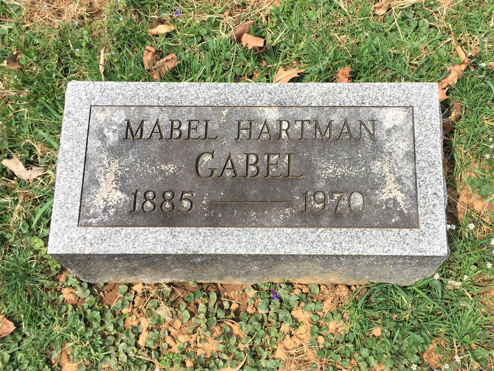
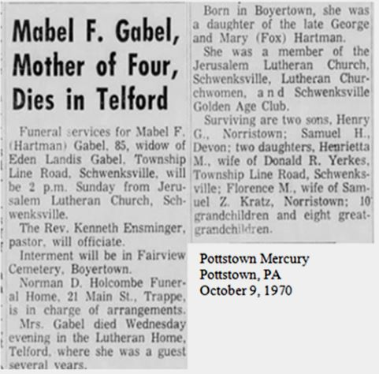
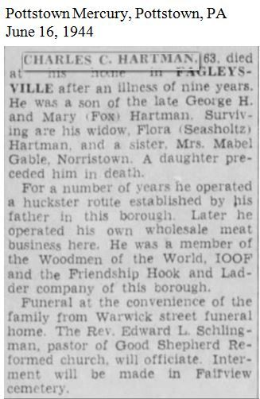
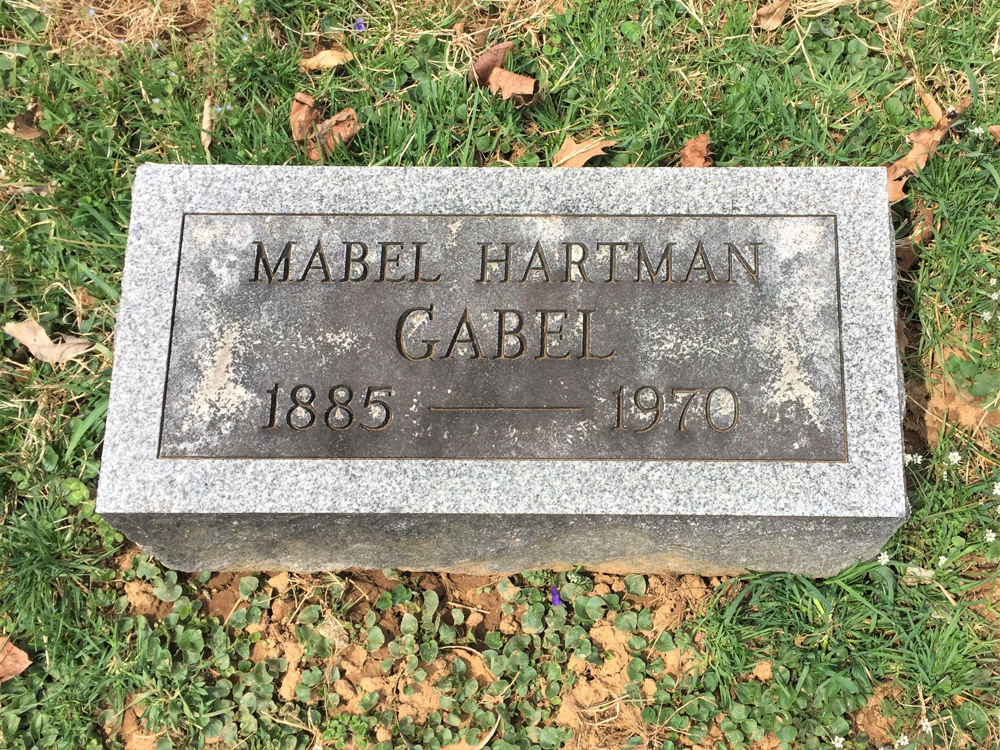
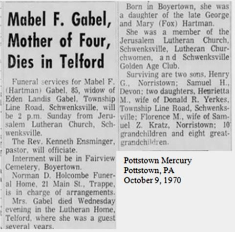

George H. HARTMAN was a grand-uncle of Titus HARTMAN.
George H. and Mary R. HARTMAN are buried together with their daughters Laura and Mabel at Fairview Cemetery in Boyertown, PA. Their children Charles and Mabel are also buried at Fairview Cemetery.


 




